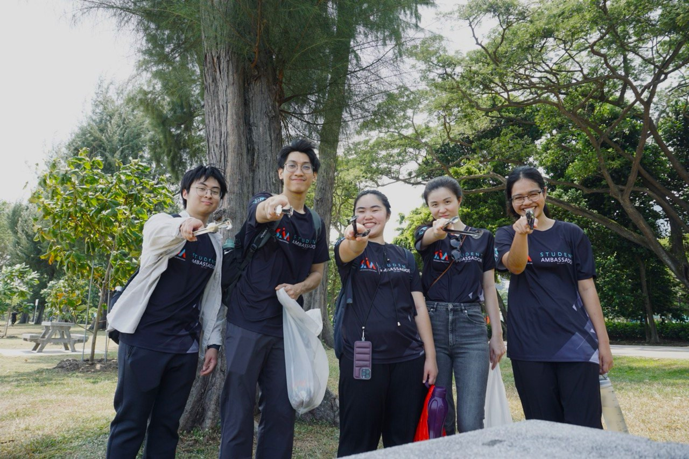
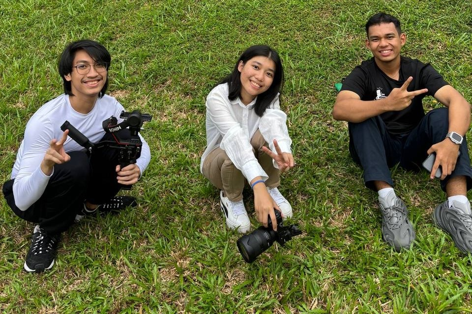
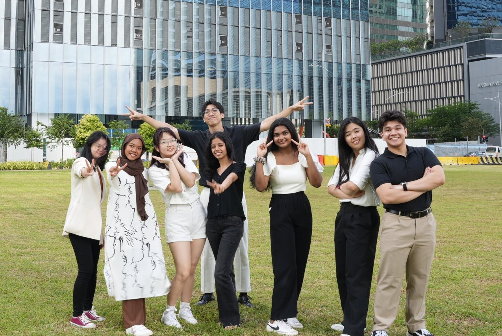
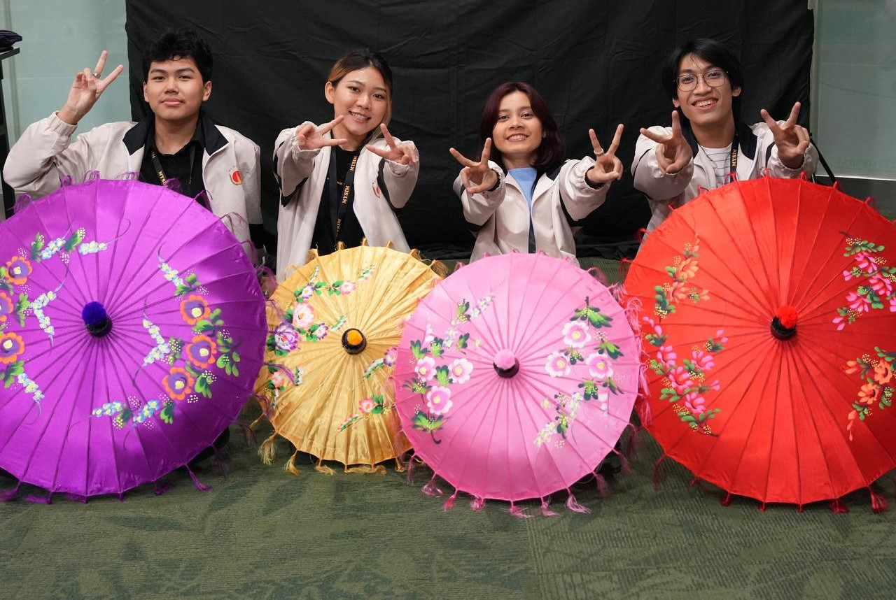

Brief About Me
I am a web developer with a passion for creating unique web applications. I enjoy coding as well as learning all new things for me. Fun fact about me is I like to workout and train Muay Thai apart from coding and another hobby which you will see later. This section contains a brief introduction about myself, including my journey into web development and my current skills.
Education
I earned my bachelor degree in Computer Science from University of London where I focused more on data science and web development. I also did many self learning after I have graduated to enhance my skills in front-end frameworks and back-end coding.
Volunteer Experience
I have volunteered in some ccas and my roles varied from liaising with other parties, assisting in photo and video shooting, conducting a tour around my school campus and organizing events. After I have graduated, I also work as an web assistant intern in some well-known companies like google and amazon.




Hobby
I enjoy capturing moments and going through those memories whenever I feel low. I focus mainly on nature and event photography. I owned a sony A7CII camera with sigma 24-70 mm lens.